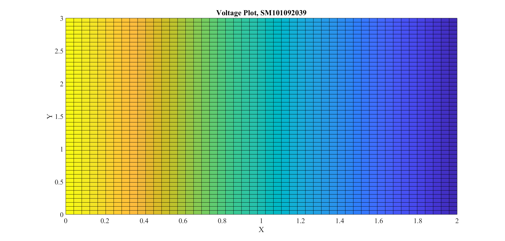
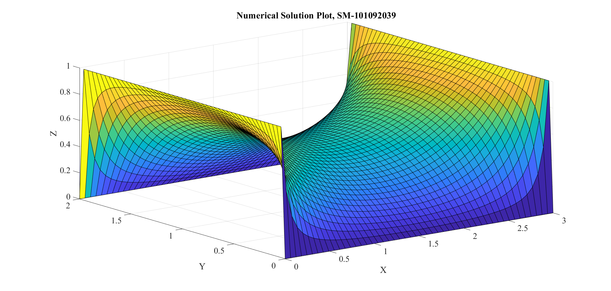
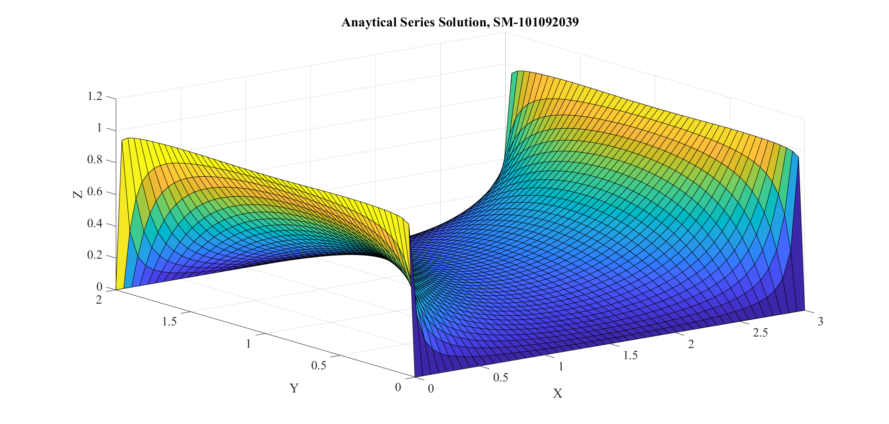

ELEC 4700
Assigment - 2 Saifuddin Mohammed, #101092039
Contents
The first segement of the assignment required calculation of Electrostatic potential of Rectanfgular region with dimensions L x W.
% 1 % a) V = V0 at x = 0 and V = 0 at x = L set(0,'DefaultFigureWindowStyle','docked') set(0,'defaultaxesfontsize',20) set(0,'defaultaxesfontname','Times New Roman') set(0,'DefaultLineLineWidth',2); close all clear clc nx = 50; ny = 50; %Create G matrix using Sparse G = sparse(nx*ny); %Set up B matrix F = zeros(nx*ny,1); % Setting up Length and Width as per the ratio L/W = 3/2 L = 2; W = 3; V_0 = 1; %Assigning V0 a value of 1; for i = 1 : nx %Filling the matrix G for j = 1 : ny n = j + (i - 1)*ny; %Mapping the Nodes n_g1 = j + (i - 2)*ny; n_gx = j + i*ny; n_g2 = (j - 1) + (i - 1)*ny; n_gy = (j + 1) + (i - 1)*ny; if (i == 1 || i == nx || j == 1 || j == ny) % Filling the matrix and setting up the boundary conditions. G(n,n) = 1; else G(n,n) = -4; G(n,n_g1) = 1; % G Matrix Diagnols G(n,n_gx) = 1; G(n,n_g2) = 1; G(n,n_gy) = 1; end if i > (nx-(nx-1)) && i < nx % Adjusting the boundaries on y-axis from the derivatives. G(i,i + nx) = -1; G(i + (ny - 1)*nx,i + (ny - 2)*nx) = -1; end end end % Configuring the V matrix with the given conditions % V = V0 and x = 0 for h = 1: ny F(1 + (h - 1)*ny,1) = V_0; % The boundary conditions have been determined above end V = G\F; for i = 1:nx for j = 1:ny n = j + (i - 1)*ny; Vmap(i,j) = V(n); end end %Generating a plot of V(x) Dx = linspace(0,L,nx); Dy = linspace(0,W,ny); figure(1) surf(Dx,Dy,Vmap) view(0,90) title({'Voltage Plot, SM101092039'}) xlabel('X') ylabel('Y')
b) V = V0 at x = 0, x = L
clear clc % nx = 50; ny = 50; %Create G matrix using Sparse G = sparse(nx*ny); %Set up V matrix F = zeros(nx*ny,1); % Setting up Length and Width as per the ratio L/W = 3/2 L = 3; W = 2; V_0 = 1; %Assigning V0 a value of 1; for i = 1 : nx %Filling the matrix G for j = 1 : ny n = j + (i - 1)*ny; %Mapping the Nodes n_g1 = j + (i - 2)*ny; n_gx = j + i*ny; n_g2 = (j - 1) + (i - 1)*ny; n_gy = (j + 1) + (i - 1)*ny; if (i == 1 || i == nx || j == 1 || j == ny) % Filling the matrix and setting up the boundary conditions. G(n,n) = 1; else G(n,n) = -4; G(n,n_g1) = 1; % G Matrix Diagnols G(n,n_gx) = 1; G(n,n_g2) = 1; G(n,n_gy) = 1; end end end for h = 2:(ny-1) %Adjusting the boundary for the Case ii requirements F(1 + (h - 1)*ny,1) = V_0; F(nx + (h - 1)*ny,1) = V_0; end V = G\F; for i = 1:nx for j = 1:ny n = j + (i - 1)*ny; Vmap(i,j) = V(n); end end % Setting up the limits for the x and the y Axes Dx = linspace(0,L,nx); Dy = linspace(0,W,ny); figure(2) surf(Dx,Dy,Vmap) title({'Numerical Solution Plot, SM-101092039'}) xlabel('X') ylabel('Y') zlabel('Z') %Using the Analytical Series solution to solve n_M = 100; series_Analytical = zeros(nx,ny); %Setting up the plot generation of the analytical solution [V,y] = meshgrid(linspace(-L/2,L/2,nx), linspace(0,W,ny)); for seq_iter = 1:n_M n_t = 2*seq_iter - 1; %The series evaluates for n = 1,3,5..... where n must be odd. %Setting up the Analytical Series solution equation from the instruction %manual equ_a = W; equ_b = L/2; series_Analytical = series_Analytical + (4*V_0/pi) .* (1/n_t) .* (cosh((n_t*pi).*V./equ_a) ... ./ cosh((n_t*pi).*equ_b./equ_a)) .* sin((n_t*pi).*y./equ_a); pause(0.001) end %Generating a plot of Analytical Series Solution %Producing a 3D plot of the Analytical Solution figure(3) surf(Dx,Dy,series_Analytical) title({'Anaytical Series Solution, SM-101092039'}) xlabel('X') ylabel('Y') zlabel('Z') 